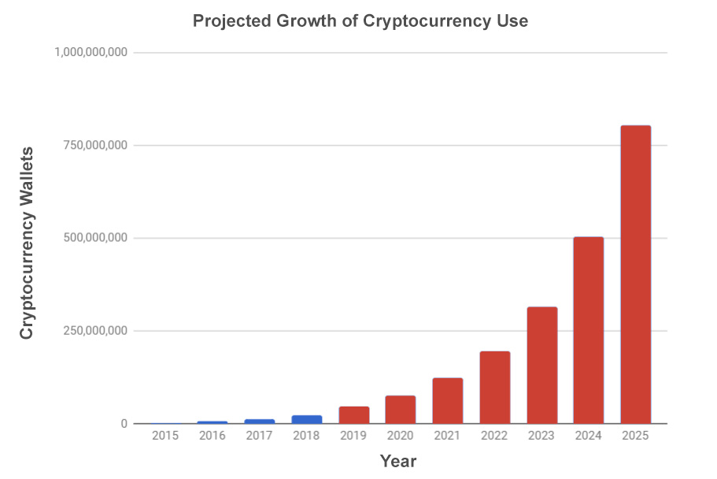
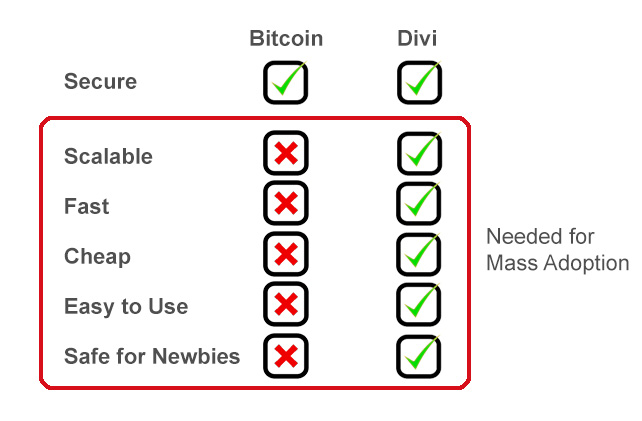
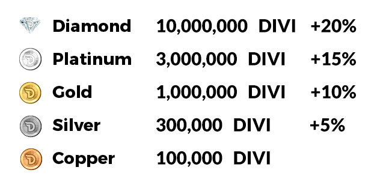
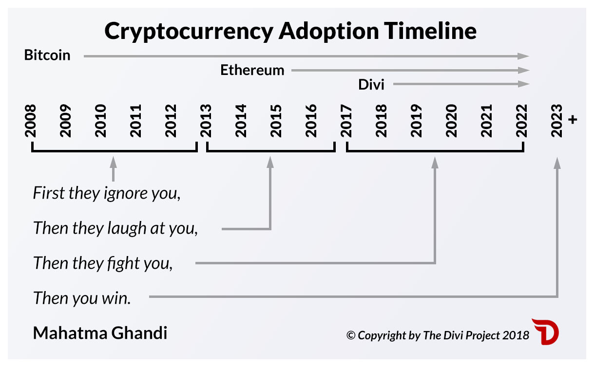
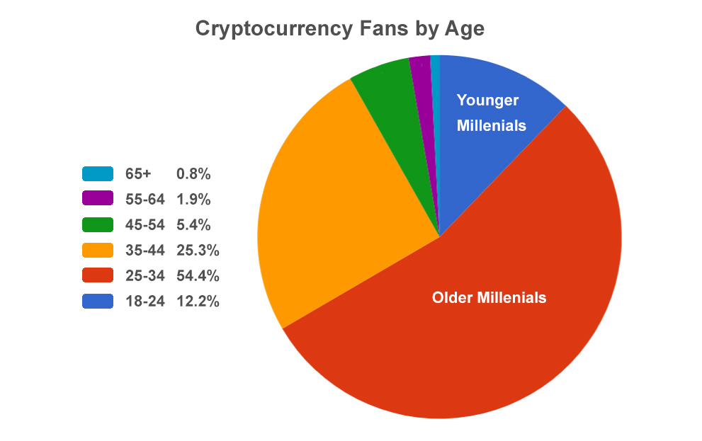
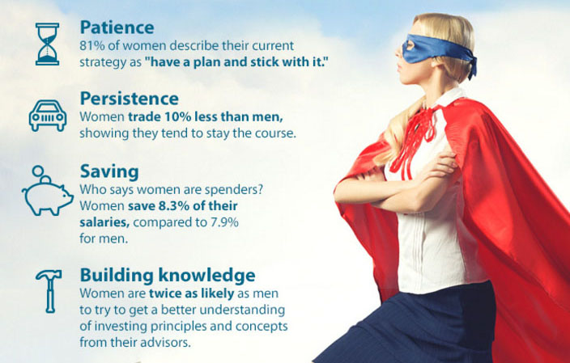

Introduction
Welcome to the Divi Project documentation repository! This service provides a comprehensive overview of everything in the Divi ecosystem. Use the navigation pane at the left side of this page to select the documentation you would like to read.
Contribute
If you would like to contribute to the Divi Project Documentation, fork this repository and check out the README to get started!
Masternode setup
// TODO
Divi CLI
The DIVI CLI commands listed here are the methods with which you can speak to the DIVI RPC client.
Blockchain commands
getbestblockhash
getblock <hash> ( verbose )
getblockchaininfo
getblockcount
getblockhash index
getblockheader <hash> ( verbose )
getchaintips
getdifficulty
getmempoolinfo
getrawmempool ( verbose )
gettxout <txid> n ( includemempool )
gettxoutsetinfo
verifychain ( numblocks )
getbestblockhash Simply gets the latest / best block hash in the network.
getblock < hash > Passing a specific block hash to this command will produce a response with all of the details of the requested block.
getblockchaininfo Returns all of the information about the current blockchain.
getblockcount Returns the current number of synced blocks.
getblockhash < index > // TODO
getblockheader < hash> // TODO
getchaintips // TODO
getdifficulty // TODO
getrawmempool Returns the current state of the mempool
gettxout < txid > // TODO
gettxoutsetinfo
// TODO
verifychain // TODO
Control commands
getinfo
help ( "command" )
stop
getinfo Returns information about the blockchain.
help List of all commands
stop
Cleanly stop divid
allocatefunds <purpose> <alias> <amount> ( "pay wallet" ( "voting wallet" ) )
fundmasternode <alias> <amount> <TxID> <masternode> ("pay wallet" ("voting wallet"))
getmasternodecount
getmasternodestatus
masternodeconnect "address"
masternodecurrent
mnsync "status|reset"
spork <name> [<value>]
Javascript implementation
// TODO
Divi coin specs
Ticker: DIVI CMC: Divi on CoinMarketCap
Github: https://github.com/Divicoin/Divi Blockchain Code: C++ Forked From: PIVX. Also includes code from Bitcoin, Dash, and Peercoin Blockchain Explorer: http://diviscan.io Blockchain APIs: Divi APIs
2MB Block Size/Height 60 Second Blocks (10,080 per week)
Consensus Algorithm: 100% Proof of Stake (PoS) Hash Algorithm: Quark
Genesis Block:
- Date: June 25, 2018
- Starting coin circulation: 617,160,700 DIVI
Reward System Payout:
- 1250 DIVI minted per block first 2 years
- 1050 DIVI for 2 years
- 850 DIVI for 2 years
- 650 DIVI after that
50 coins from every block accumulate for the weekly lottery block fund. The community will be able to vote to reduce the rate of inflation.
- Masternodes (45%*)
- Staking (45%*)
- Treasury for Development and Marketing (8%)
- Charity (2%)
*Depends on the see-saw algorithm that creates a balance between MNs and Staking
Lottery Block Details:
- Lottery block payouts happen on average once per week, but can happen at any time.
- 10,000 DIVI minimum must be staked to be eligible to win a lottery block.
- One big lottery block winner each week, awarding 252,000 DIVI.
- Ten smaller winners per week, awarded 25,200 DIVI.
Masternodes:
5 Tier System:
| MN type | DIVI Required | Block Win |
|---|---|---|
| Copper | 100,000 DIVI | |
| Silver | 300,000 DIVI | +5% better |
| Gold | 1,000,000 DIVI | +10% better |
| Platinum | 3,000,000 DIVI | +15% better |
| Diamond | 10,000,000 DIVI | +20% better |
Other Features:
- One-Click Desktop Install
- One-Click Cloud Install
- Works on standard IP Addresses
Token Sale Details:
Date of ICO: Aug 27 - Nov 24, 2017 DIVX Created: 6,171,606.7385 DIVX ICO DIVX Price: US$0.0081 (DIVI) or $0.81 (DIVX) at close of ICO Founders Coins: 8.33% of Total
Smart Contract Details:
Smart Contract Addr 0x13f11C9905A08ca76e3e853bE63D4f0944326C72 Token Symbol DIVX Decimals 18
DIVX Rich List: https://etherscan.io/token/0x13f11c9905a08ca76e3e853be63d4f0944326c72#balances
Masternodes
The Divi Project is the inventor of several new technologies that are part of our masternode program. Besides having five different types, we have added one-click install processes (home or cloud), dynamic IP functionality, single-computer setup, and “Lottery Blocks.”
Masternode System with Five Options
Democratizing Participation Through Affordability: The Divi Project offers five types of masternodes, according to the following list:
- Copper: 100,000 DIVI
- Silver: 300,000 DIVI (+5%)
- Gold: 1,000,000 DIVI (+10% )
- Platinum: 3,000,000 DIVI (+15%)
- Diamond: 10,000,000 DIVI (+20%)
Participants choose the masternode(s) that they're able to afford, and commit to support Divi's network. More expensive masternodes may also require more commitment of resources, and may do more to support the network, especially as the Divi ecosystem evolves and new features are added.
Supporting the Divi Network
What is a masternode, really? It's just a piece of software. It's an app that's already built in to the Divi desktop wallet. You launch the app, "fund" it with some of your DIVI coins, and it will go to work once it's connected with enough other nodes. Those other nodes are owned by other DIVI masternode holders around the world, who have gone through the same process.
What does a masternode actually do? Divi's masternodes remain in constant contact with other nodes in the network. Through this communication they verify and process transactions and keep everything secure, while continuously maintaining an up-to-date copy of the ledger. Approximately every minute, one of the masternodes wins the right to add the latest block to the Divi blockchain. That winner collects all the transactions, writes them into the block, and gets paid in DIVI. Other masternodes verify everything, and if all is good, the blockchain grows.
Masternode holders aren't getting DIVI for free. They are paid for the work they're doing, which requires the following:
- Continuously Staking Coins - Masternode holders "stake" their coins, keeping them tied up while they run their masternode. These coins remain in the user's wallet, but can't be spent or moved while the masternode is in operation.
- Computer Equipment - Some masternode holders choose to set up a dedicated computer just for their masternode, although this isn't necessary. The computer that's used for this should be be left on 24/7 . So like any piece of electronic equipment it maybe get some wear and tear, and require occasional maintenance.
- Cloud Install - You don't need a computer for this. You can host a masternode in the cloud with our system. There's a small monthly fee, which is deducted from your account, in DIVI, automatically each month.
- Power Bills - Unlike power-hungry Bitcoin mining, masternodes don't use much power or require custom equipment.
- Internet - You'll need a connection that's fast enough to handle the traffic required to keep your copy of the ledger updated and keep in contact with your peer nodes. The more expensive nodes, especially the Diamond, may at time require a very fast speed, so are best hosted in the cloud.
- Software Updates - Divi makes this easy with automatic updates
What happens if the masternode goes down? Perhaps power is lost or a computer needs to be repaired. For whatever reason, it will disconnect from the network, and during this time no rewards can be earned. Once re-connected, it will download the latest version of the Divi ledger and will start earning coins again.
For the reasons of maintenance and stopping/starting, many people will opt to host their masternode in the cloud, which pays the same rewards and is even easier to do.
Divi's Unique Technology
One-Click Install Process - Revolutionary Ease of Use: Divi was first to announce the invention of a single-click masternode installation process. Our masternodes can be installed by any skill level of user on a home computer, laptop, or in the cloud. Is it really "one click"? Yes it is, after essential data is entered such as the level of node and what account is used to fund it. A single click will install it. Divi saw a big opportunity here after the founders experienced first-hand the tortuous manual process that existed before, which typically required 4-5 hours of coding and cursing.
Dynamic IP Capability - Until now, a masternode setup at home required people to try to get a static IP address from their internet provider. Divi has solved this big limitation to MN adoption.
Single Computer Install - Our new install process allows a user to set up a masternode using only a single computer. Until now, two were required to do it, and a masternode couldn't stake too. Divi's technology allows a user to use the same computer to not only set up a masternode, but also stake their extra DIVI at the same time (provided your system and internet speed are fast enough to do both.)
Multi-Node Capability - If a user's computer system and internet access are powerful enough, it will be possible to set up more than one masternode on a home computer, which would also require maintaining separate blockchain copies.
Lottery Blocks - Approximately once per week, eleven lucky DIVI network supporters who have at least 10,000 DIVI staked or in a masternode will share a lottery block. 50 DIVI is added to the lottery fund every minute until someone wins. This helps keep people in our system and adds excitement to our community.
Improved Efficiency, Scalability, and Sustainability - We delineated the work performed by each tier of masternode, eliminating huge amounts of redundant processing.
We enhanced our seesaw algorithm so that it adjusts the relative populations of the various types of masternodes to maintain maximum efficiency as the demand for each type's functionality fluctuates.
The fees for this new functionality not only fund increased returns for masternode holders, but also drive increased participation in the Divi netowrk and ecosystem, adding additional value for all participants.
Earning an Income
Divi holders who place their coins within our masternode system earn income in the form of more minted DIVI coins. This mechanism has the added effect of excluding Divi from being considered a security in the US, since profits earned by DIVI holders are not accrued due to the efforts of a promoter or third party (the fourth requirement to be considered a security according to the “Howey Test.”)
Governance
We have built the most advanced governance system in the blockchain space. Masternode Holders and Stakers with 10,000 or more DIVI will be able to vote on various aspects of Divi's key metrics and functions, development and marketing proposals, and leadership positions. Once fully phased in, Divi will be a fully Decentralized Autonomous Organization, controlled by its users.
Masternode calculator
Quickly and easily get an estimate on potential earnings with Divi masternodes. This will calculate all of the different types of nodes.
https://diviproject.org/calculator
Media placements
| Date | Outlet | Title | UVM | Link |
|---|---|---|---|---|
| 10/17/2017 | Forbes | Brilliant Startups Are Using ICOs To Revolutionize The World Of Blockchain” | View | |
| 10/19/2017 | Hackernoon.com | 8 Resources to Get You Caught Up With Crypto | View | |
| 10/19/2017 | Entrepreneur | 10 Companies That Are Getting Creative With Cryptocurrency | View | |
| 10/23/2017 | The Next Web | What does it take to get women involved in crypto? | View | |
| 11/21/2017 | BlockTribune | The Divi Project On Crypto Transactions: “If People Can’t Do This While Drunk, Then It’s Not Good Enough” | 14,807 | View |
| 11/30/2017 | Computer America Podcast | The Divi Project Interview: Geoff McCabe | 1,000,000 | View |
| 12/5/2017 | B2B News Network | Divi Project seeks to create a blockchain-based cryptocurrency businesses will actually use | 56,758 | View |
| 1/7/2018 | The Scope Weekly | Merrill Lynch Blocks Bitcoin But Crypto Advocates Have Different Plans | 28,000 | View |
| 1/9/2018 | Bold Business | Interview with Geoff McCabe and Tim Sanders | 100,000 (syndicated) | View |
| 1/9/2018 | Cheddar | New Cryptocurrency Looking to Appeal to the Masses | 148,000,000 | View |
| 1/16/2018 | TechRepublic | Why cryptocurrency needs to get more user-friendly to achieve mainstream success | 9,385,059 | View |
| 1/20/2018 | The Bitcoin News | These Startups are Making Blockchain Technology and Cryptocurrencies More User-Friendly | 205,495 | View |
| 1/20/2018 | Inside Bitcoins | The Bitcoin News pickup: These Startups are Making Blockchain Technology and Cryptocurrencies More User-Friendly | 149,320 | View |
| 1/21/2018 | BTC Manager | The Bitcoin News pickup: These Startups are Making Blockchain Technology and Cryptocurrencies More User-Friendly | 92,012 | View |
| 1/22/2018 | Crypto Daily | The Bitcoin News pickup: These Startups are Making Blockchain Technology and Cryptocurrencies More User-Friendly | 175, 290 | View |
| 2/23/2018 | This Week in Tech Netcast | Episode 279: The Divi Project | 1,321,134 | View |
| 3/2/2018 | CNBC | Bitcoin takes on cash, as more places accept the cryptocurrency | 26,089,258 | View |
| 3/5/2018 | Yahoo Finance | Spending your digital coins on stuff is easier said than done | 1,834,222 | View |
| 4/8/2017 | Irish Tech News | SURVEY OF 150 ICOS REVEALS CONSENSUS OF 11 SUCCESS FACTORS | UVM | View |
| 4/16/2018 | Payments Source | 03.05.18 Your morning briefing | 87,789 | View |
| 5/8/2018 | Girlboss | What’s Cryptocurrency And Why Should I Care? A Guide For N00bs | 51,782 | View |
| 5/11/2018 | Finance Magnates | All Eyes on Ripple as it Faces Lawsuit – is XRP a Security? | 615,202 | View |
| 5/11/2018 | Investing.com | Ripple Holds Steady Despite Legal Scrutiny | 16,380,603 | View |
| 5/11/2018 | The Investors Podcast | Investing.com pickup: Ripple Holds Steady Despite Legal Scrutiny | 2,367,051 | View |
| 5/11/2018 | Indian Tax Home | Ripple Holds Steady Despite Legal Scrutiny | N/A | View |
| 5/11/2018 | The CryptoCast with Jason Hartman | CC 12 - An ICO Case Study with Divi Project's Geoff McCabe | N/A | View |
| Summer 2018 | Stanford Social Innovation Review (online) | Journalism’s Savior? | 453,692 | View |
| Summer 2018 | Stanford Social Innovation Review (print) | Journalism’s Savior? | 15,000 | N/A |
| 5/22/2018 | Silicon Republic | Is it possible to create an environmentally friendly cryptocurrency? | 698,076 | View |
| 6/01/2018 | Nasdaq | Opening Doors For Enterprise Blockchain Technology Through Day-to-Day Cryptocurrency Spending | 9,379,166 | View |
| 6/27/2018 | CeddarTV/NYSE | Live TV Interview: Divi Project Is Like PayPal For Crypto, Minus the Third Parties | 148,000,000 | View |
Whitepaper
Version 2.0 - Last Updated June 25, 2018
Summary
Everything we do has one goal in mind: to make cryptocurrencies easier to use. Cryptos have the power to revolutionize the way we use money, and within several years will be adopted by billions of ordinary people for day-to-day transactions. This can’t happen the way they are now: slow, expensive fees, impossible to understand, and easy to make a mistake and lose money. Divi’s user-friendly Smart Wallet™ and blockchain make transactions far faster, less expensive, easier, safe to use, and with a special focus on eliminating user error. Divi is powered by our revolutionary one-click masternode program, the first to allow anyone, without technical knowledge, to earn coins by joining our network using their home computer.
{.align-center}
What is Divi?
The Problem We’re Solving
In 2009 Satoshi Nakamoto invented Bitcoin when he released his first whitepaper titled "Bitcoin: A Peer-to-Peer Electronic Cash System" imagining a digital currency that would be used by millions of people around the world for everyday transactions. While Bitcoin is successful in its own way, it has strayed from its intended purpose. It is painfully difficult to use and understand, it is too slow, and transactions are expensive. The Divi Project was created to solve all these problems and realize Satoshi’s dream of a fast, safe, and cheap digital money that can be used by ordinary people around the world without banks or governments as an intermediary.
{.align-center}
A Digital Money for Mass Use
The Divi Project has a novel solution to solve the biggest and most lucrative problem in the crypto world: mass adoption by average people. We seek to bring the power of cryptocurrency to those who now avoid it, currently finding it too technical, uninteresting and/or scary. The coming digitization of all money will inevitably be the world's largest transfer of wealth, perhaps tens of trillions of dollars. There has never been a bigger financial opportunity in history, and the Divi Project will be first to market with a truly viable solution.
The Divi Project has several important aspects that set it apart from other cryptocurrencies:
- User Friendly Smart WalletTM
- Tiered, One-Click Masternode System
- Crypto Banking
- Lottery Blocks
- Advanced Governance System
- Multi-Coin System
User-Friendly Smart Wallet™
Our new blockchain allows us to socialize and humanize financial experiences by hiding the "crypto" underneath an easy-to-understand User Interface. Our Smart Wallet™ has been designed to remove all the "pain points" that currently prevent most people from getting excited about cryptocurrencies. Our design-first focus benefits from a deep understanding of User Experience (UX) and is shown through our expertly integrated user interface.
The First One-Click Tiered Masternode System
Based on a new type of masternode system with five levels, holders of DIVI coins participate in maintaining the network to earn more. Once only for computer experts, Divi’s user-friendly masternodes can easily be set up at home or in the cloud by anyone without technical knowledge.
Crypto Banking
Divi’s Smart Wallet™ has many new ways to manage money, such as protecting your transactions more securely by requiring the receiver to confirm a PIN code. It will have features to help you save, share, collect and track taxes. Our Vaulting features allows you store money on the blockchain so nobody, not even yourself, can remove it until a predetermined date, which is more secure than brick-and-mortar banks, and also good for long-term savings, such as college funds. With over two billion people in the world who don’t have a bank account, there’s a great opportunity for the services Divi can offer.
Lottery Blocks
Currently unique in crypto, once per week one of our masternode holders or stakers will strike it rich by mining a lottery block. This will pay them 252,000 DIVI and ten other people 25,200 DIVI each. To be eligible, one must have a masternode or a staking wallet with minimum 10,000 DIVI in it.
Vaulting
Our technology solves one of the biggest security problems presented by Bitcoin and other cryptocurrencies: How do you make it more secure than a bank? The answer we call “Vaulting.” Vaulting offers a variety of savings opportunities and secures funds in a time-locked account that is inaccessible by anyone including the funder. It’s more secure than a safety deposit box, because even under threat or coercion, one can’t remove it.
Multi Coin Wallet
Our Smart WalletTM will not only work with DIVI, but also Bitcoin, Bitcoin Cash, and Ethereum too. We are already working with a number of other blockchain companies who wish to integrate their technology with our wallet. Our users want to keep and use all their cryptos in one user-friendly system. Until Divi, such a wallet experience hasn’t existed.
Governance System
We are building what may be the most innovative governance system in the cryptocurrency world. Coin holders will be able to vote to modify parts of the blockchain itself, such as the inflation rate, fee amounts, and even turn some features on or off. Eventually they will be able to elect some of Divi’s leadership and vote for funding proposals too.
Marketplace Integrations
We will build easy-to-use marketplace integrations for Wordpress, Joomla, WooCommerce, Magento, and other popular e-commerce platforms so that merchants and service providers can easily start to accept DIVI. Our focus will be to add in products that appeal to our core users such as millenials and crypto fans, but eventually expand to more common products for mass markets.
Team
Divi’s development team have on average 20+ years of experience building and delivering world-class software on time and on budget.
Leadership
Our leadership team is highly experienced.
CEO and co-founder, Geoff McCabe, has a master’s degree in physics and has led three multi-million dollar businesses to success before joining Divi.
Michael Greenwood started at Microsoft as a senior developer at age 19, and rose to become a principal UX designer for projects such as Origami, Xbox, SQL Server, Windows 7, Windows 8, 8.1, and 10.
David Kelley, formerly CTO of Hall Labs, one of the world’s top technology incubators, heads up Divi’s blockchain team.
Divi’s advisors include Tim Sanders, formerly Chief Solutions Officer at Yahoo and Heidi Krupp of Krupp Kommunications, one of America’s leading PR firms.
Advisors include Toni Lane Casserly, co-founder of Coin Telegraph, and Ramez Naam, noted futurist and winner of last year’s Phillip K Dick award for best Sci Fi novel. According to Naam, "Divi is the future. It's simple enough for everyone. It's cryptocurrency's Netscape, iPhone, or Tesla moment."
Business and Management
Geoff McCabe, CEO New Technology Visionary, Management, SEO, Marketing, Sustainability https://www.linkedin.com/in/geoffmccabe
Nick Saponaro GM and Lead Full Stack Developer https://www.linkedin.com/in/nicksaponaro
Tim Sanders, Advisor/Operations Former Chief Solutions Officer, Yahoo Inc https://www.linkedin.com/in/sanderssays
Technical Development
Michael Greenwood, VP of Development UX Expert, Security, AI, Ex-Microsoft Team Leader https://www.linkedin.com/profinder/pro/michaelgreenwood
David Kelley, Lead Blockchain Engineer CTO, Hall Labs. Microsoft MVP. https://www.linkedin.com/in/davidjameskelley
Mark Waser Principal Blockchain Engineer, A.I. Scientist https://www.linkedin.com/in/markwaser
Herman Hendricks Project Manager Microsoft PM, Artificial General Intelligence Inc https://www.linkedin.com/in/herman-ta-zayah-hendricks-jr-csm-819a0635
David Caldwell Lead Software Developer https://www.linkedin.com/in/david-caldwell-11321413
Michael Byrd Software Development https://www.linkedin.com/in/thebyrdman
Carl Youngblood CTO, Mainframe. Blockchain Advisor & Evangelist https://www.linkedin.com/in/carlyoungblood
Marketing and Promotion
Regina Bauzaite Marketing Director https://www.linkedin.com/in/regina-bauzaite
Edwina Bull Marketing and Operations https://www.linkedin.com/mynetwork/invite-sent/edwina-bull-7009284a
Heidi Krupp & Darren Lisiten Public Relations and Business Strategy http://kruppkommunications.com/heidi-krupp https://www.linkedin.com/in/darren-lisiten-171a671b
Advisors
Ramez Naam Author, Speaker, Futurist, ex Program Manager, Microsoft https://www.linkedin.com/in/rameznaam
Toni Lane Casserly Co-Founder, CoinTelegraph.com. Faculty at Singularity University. Speaker, writer, Advisor for over a dozen other cryptocurrency projects. https://www.linkedin.com/in/tonilanec
Nicholas Cottrell Legal Advisor Riverstone Law https://www.linkedin.com/in/cottrellnick
More Team Details are here: https://diviproject.org/#team
Basic Coin Stats
Divi is a decentralized ecosystem utilizing a cryptocurrency (DIVI) that is minted through a Proof of Stake consensus protocol using both simple staking and “Master Nodes” as a means of securing and verifying transactions within the network. Divi’s PoS masternodes can be run on virtually any machine with little to no negative effect on the environment.
During the original token sale, our tokens were ERC20 compliant derivatives of the Ethereum blockchain, and have been tradable on Cryptopia, with ticker DIVX:
https://www.cryptopia.co.nz/Exchange/?market=DIVX_BTC
On June 12th 2018, the conversion process began, whereby each DIVX can be converted to 100 DIVI on the official blockchain. This process has no cut-off date.
Genesis block date: June 25, 2018 Starting coin circulation: ~600 million PoS - Proof of Stake with Masternodes
Reward system payout
- Staking (45%*)
- Masternodes (45%*)
- Treasury (8%)
- Charity (2%)
60 second blocks (10,080 per week)
- 1250 coins minted per block first 2 years
- 1050 coins for 2 years
- 850 coins for 2 years
- 650 coins after that
Note: 50 coins from every block accumulate for the weekly lottery block fund.
*Divi uses a “See-Saw Algorithm”, which balances the payout between Stakers and Masternodes. These percentages will shift if coin holders tend to favor one over the other. This ensures that there’s a balance between the two types of network participants.
Divi intends to roll out great new features on a regular basis, which we believe will keep our community excited, loyal, growing, and participating in the Divi ecosystem.
What can DIVI tokens be used for?
Divi is designed so that it’s primary function is as a currency. However, it also has utility:
- Spend them: The Divi Project is working to set up online stores to accept DIVI. At these locations, you’ll be able to spend your DIVI tokens for real world goods and services.
- Earning tokens with masternodes: Using the software and resources we will provide, users are able to earn more tokens. The masternode software users install on their computer becomes a useful part of the overall network maintaining, updating, and securing the Divi blockchain. The tokens earned are payment for use of your time, computer, electricity, and internet bandwidth.
- Earn tokens with a staked wallet: Users who keep their tokens in the Divi wallet will earn more each week. The wallet also supports the Divi network in different ways than the masternodes do. Like them, this takes time and resources.
- Participate in our Names/DNS System: DIVI tokens can be used to purchase custom names that are used as your wallet addresses.
User-Friendly “Smart Wallet”
Divi’s solution stores names and metadata along with transaction data. Because of these improvements, Divi’s User Interface is easier to learn and use than any other cryptocurrency.
In order to send money to someone, a user only needs to know the counterparty’s name, email, phone number, helping to eliminate the possibility of loss of funds from sending to an incorrect address.
The current state of cryptocurrency wallets is still very primitive and not ready for use by masses of people for many reasons. We are matching modern UX sensibilities with the digital experiences people are already use to. Think Apple, Venmo or PayPal.
Addresses Will be Names Instead of Numbers - One of the biggest barriers of entry to the world of cryptocurrencies for average people is the way all wallets function using long strings of random characters as a wallet’s “public key.” Many people describe themselves as “terrified” whenever they send a transaction, because just one wrong character in the wallet’s address can result in all the money being sent to the wrong person, and there’s absolutely no recourse. The Divi Project solved this by allowing users to associate each wallet’s public key with a unique name of their choice, which can be used by others to send funds or connect with them.
Example:
DV-jenni123 instead of 0zc1F9Ca42eBc6611f83d063d74a817aBaFcf1B266
Benefits:
- Now it’s possible to remember your wallet address
- Less errors in sending funds
- Faster and easier
- More user friendly
- Less intimidating for new users
Send by Email or Phone Number - Because each named account can be mapped one-to-one to their wallet address, you’ll be able to send DIVI to someone if you only know their name, email, or phone number.
Pockets (Multiple Address/Identity Support)
Benefits:
- It's like multiple bank accounts
- Choose your own level of privacy for each pocket
- Suitable for people with multiple businesses
- Save money for various projects
- Separate money for multiple family members
- Set pockets to pay out or request subscriptions or loans
MultiSig Capable - This simply means that a wallet or pocket will need two or more people to create and verify transactions.
*Multi-Coin Wallet *- In addition to DIVI, will soon be able to hold their Bitcoin and Ethereum in our wallet. We’re working on partnerships with other cryptocurrencies to add them as well in the future.
Jargon Elimination - Newbies are instantly confused by all the jargon with the cryptocurrency world. Within our wallet UX, we use more familiar terms that beginners are comfortable with. Words on our list: blockchain, private key, crypto. Even the word “wallet” is often overused or misused when what we really mean is just an “account”.
Crypto Banking
New Ways to Transact and Manage Money
We want our Smart Wallet to be able to work in a way that’s already familiar to our users. After so many years you’d think digital wallets could do more than they do now. Our new system will allow for a multitude of new types of transactions beyond the “fast send” and “dark send” features that are typical of most cryptos.
Piggy Bank - Want to save money for something special? Automatically set a small portion of your income into a pocket that even YOU can’t access until a future date.
Scheduled Payments - Want to send money later, or on a specific date so you don’t forget? Schedule a payment using our wallet.
Subscription Send - Our wallet will be able to send a preset amount of Divi on a regular schedule. You’ll even be able to create a pocket, fill it with Divi, and send it out daily, weekly, or monthly to a given address.
Request Money / Billing - Send or schedule messages within the wallet with a link so a contact can easily pay you, and even pre-decide what pocket you want the money deposited into.
Auto Split - When money comes in, you can have have it automatically re-distributed to other wallets or pockets according to preset percentages. Great for business partners.
Tax Separation - Using the Auto Split feature, you can have the taxes for the products you sell automatically split off into a separate pocket.
Masternode System
Masternodes replace miners in our blockchain ecosystem. Our Proof of Stake system uses less than 1% of the electricity that mining does. In addition we have invented a spectrum of new masternode technology as follows:
Tiered Masternode System: Divi is building the world’s first tiered masternode system, offering higher rewards to those who accumulate more coins for their nodes.
“One Click” Masternode Setup: Currently it’s extremely complicated to set up a masternode and only computer geeks can do it. The Divi team has developed an easy masternode installation setup for all common operating systems as well as step-by-step video tutorials.
Single-Computer Masternode Setup: Other masternodes require users to have two computers. One to run the masternode and the other to fund it. Divi’s setup will allow users to do it all on one, so your computer can have both a masternode AND a staking wallet.
MOCCI: “Masternode One Click Cloud Install” We have provided a way for our users who don’t want to run a masternode at home to easily set one up on the much faster cloud servers from Amazon, Microsoft, and others. We will purchase servers space and set up the back end of this in advance, to make a fast and seamless user experience. Payments for the service will be made by the users in DIVI.
Dynamic IP Address Masternodes: Currently existing masternode systems require a Static IP, which is difficult and expensive for average users, especially outside of the U.S. We are working on a solution to change this so that more people can set up a node on their home computer.
User Interface: All current masternode clients use a very similar boring interface that’s plain, non-intuitive and lacking in features. Divi’s team includes a world-class UX/UI expert and we have designed a user-friendly interface making the process easy and fun.
Info and Stats: Another one of the most requested masternode features is a user-friendly way to view masternode stats from within the masternode and mobile application. We are rolling out easy-to-view stats such as earnings history, current block, coins in circulation, total global masternodes, coin value in USD/BTC, community proposals, voting % approved, and more.
Masternode Map: We will create a map, showing all the masternodes and how they’re connected. Participants will be able to see basic contact details and a photo/logo of other node holders, if they chose to provide it. The goal is connection, participation, and fun, but we realize that many people will prefer to keep their anonymity and that will be an option too.
Tiered Masternode System Details
One of the reasons that masternode coins are so popular is that they create a community with a shared goal. Our tiered system encourages participants to earn more coins and accumulate them, always striving for the next level. We’ve set the following tiers:
{.align-center}
The chance of earning coins at each masternode level improves proportionally with the number of coins. For example, the Silver masternode is 5% more likely to win a block than three Coppers. Or, the Diamond is 20% more likely to win than 100 Coppers. Thought of another way, a diamond node is like owning 120 copper nodes.
Holding extra coins in the masternode gives no benefits. So a Copper with 150,000 DIVI gives the same reward as 100,000.
We believe that this leveling system will offer the following benefits to Divi’s network:
- Increased stakeholding, which creates scarcity.
- Discourages holding massive numbers of masternodes by single entities.
- Gamifies proof of stake in a way that appeals to many demographics, who will want to save their DIVI to reach the next tier.
More information about Divi’s Masternodes: https://medium.com/diviproject/divi-masternodes-explained-f1fe24d8dab5
Lottery Blocks
Divi is excited to present a new, original feature called “lottery blocks”. The lottery blocks concept is a new way to randomly reward participants that are using their resources to support the network. The Lottery Blocks system is designed to increase participation and security in the Divi network by making people want to keep their coins in the ecosystem and off exchanges.
- 50 DIVI designated from every block created (one per minute).
- One big lottery block winner each week, awarding 252,000 DIVI.
- Ten smaller winners per week, awarded 25,200 DIVI.
- To be eligible to win, participants must be actively staking 10,000 or more coins, or have a masternode running.
- Owning multiple staked wallets or more than one masternode will increase your odds.
- Eligible to win unlimited times.
More Info: https://medium.com/diviproject/divis-lottery-blocks-8c323e3b0b4b
Multi Coin Wallet
During our token sale, one of our top requests from our community was to add their favorite cryptos into our wallet. Most people dislike the wallets that are currently available on the market, and they wanted a user friendly way to handle their Bitcoin and other cryptocurrencies.
So we’re doing that. Both Bitcoin and Ethereum will shortly be included in our Smart Wallet. Our users will be able to store and check their balances in these coins, and send/receive them too.
We’ll also be strategically adding other cryptos as well, and eventually will have dozens of the most popular within the wallet.
Using APIs you’ll also be able to instantly see the fiat value of all your crypto holdings that are registered with the wallet.
Once Atomic Swaps and DEXs (Decentralized Exchanges) have graduated out of their test phases, we’ll connect you to them so you can trade.
Governance System
Divi will launch with a basic governance system, built into the Smart Wallet. It will be phased in and improved over time, including new features based on advancements in the industry, and what our community wants.
Anyone with 10,000 or more DIVI in a wallet will be able to vote. One vote for each 10,000 coins. Whether one has a masternode or a staking wallet, they’ll be eligible.
Decentralized governance is part of the cutting edge of blockchain and we are democratizing it in new ways. Other masternode governance systems, such as for DASH or PIVX, are more like technocracies, because only an expert can set up a masternode to vote. Our easy masternode installation process makes it so that anyone can participate in governance, as long as they own enough DIVI.
How this plays out will depends a lot on our community. We expect more talented people will join us and so we’ll feel safer giving up more control. Because we’re breaking new ground here, expect to see our governance roadmap periodically improved based on what we’re learning both inside and outside of the Divi ecosystem.
Stage 1 - Settings
The first stage of governance will allow the community to vote on various settings such as
- Fee Amounts
- Inflation Rate
- Blockchain metrics
- Features on/off
Some of these settings will adjust automatically based on the result of the vote. Others will require a software upgrade before they can be changed. Some, such as the inflation rate, may be one-way dials that can only be adjusted downwards.
Stage 2 - Proposals
At first, some spending proposals will be put up for vote by Divi’s founders, based on recommendations by the technical team. Later, community members themselves will be able to type up spending proposals themselves and bring them to a vote.
Not all spending will go through a vote process. Obvious maintenance and features, especially those that are on the roadmap, will be greenlit by our developers without a vote. Over time, the Divi community will get more power to make these decisions.
Stage 3 - Leadership
Initially, the decision about how The Divi Project grows will be made by the members of The Divi Foundation. As we see our community growing and demonstration behavior that inspires confidence, we’ll be able to allow the community to vote for new foundation council members to replace those that leave. Eventually, we hope the major of council seats will be elected.
There are both legal and technological challenges that need to be solved. Government rules regarding foundations aren’t written to handle multinational DAOs (Decentralized Autonomous leader in DAO governance, forging a new path that others will follow.
Marketplace
After “ease of use” and security, the next biggest challenge with cryptocurrencies is probably that there’s little to spend them on. The dream of crypto used everywhere for everyday purposes is still several years away, but Divi is taking on this challenge by providing the infrastructure to businesses and consumers to make this possible.
Marketplace Integrations
Our main focus regarding the marketplace will be to help people and businesses to offer their goods and services on their own websites. We’ll provide technology to make this easy for them, such as
- Wordpress/Joomla Plugins
- Embeddable Buttons
- Shopping Cart Integrations
- Ecommerce Plugins
These will connect directly to our smart wallet, making payment as easy as can be. They will even be able to adjust the DIVI price to continually convert to match that of a fiat currency such as US Dollars, if the merchant desires.
Listings Marketplace and Map - Within our Smart Wallet, DIVI holders will be able to list their goods and services for sale. Users will be able to use Divi’s Smart Wallet to find what’s for sale near them and buy directly from those merchants. There will be a small fee in order to create listings, which helps to fund blockchain development and marketing. People will be able to look for vendors by product category, by geo- location, and by searching on a map.
KYC and Identity Verification - In order to participate in the Marketplace, users must verify their identity. There will be no anonymity here so we don’t end up being Silk Road 2.0 and banned by governments.
Reaching Critical Mass - We don’t need every store online to accept DIVI, but we do need a critical mass of them so that people with DIVI can spend it on something, and the store owners themselves can in return spend it again, or use it for staking, rather than just converting it to bitcoin or dollars. Our plan to start is to get at least one good online vendor in every major vertical category, in the biggest markets such as the U.S. and Europe. These retailers will discover a new revenue stream with DIVI, stick with us, and we expand from there.
We’ll be working hard on many fronts to create a thriving DIVI economy, including perhaps working with leading young designers to create exclusive products that can only be purchased with DIVI. The Divi Project’s team includes people with extensive retail and product design experience, such as Geoff McCabe, Divi’s CEO, who used to own a chain of 30 retail stores, and worked in product design for eleven years.
Privacy & Anonymity
We must distinguish between privacy and anonymity. Privacy is a human right everyone is entitled to. Meanwhile, anonymity is a grey zone and likely to get cryptocurrencies banned by governments in the near future because of inevitable abuse by bad actors.
We expect authoritarian regimes and banks will use this as an excuse to try to ban or control cryptocurrencies. Our job is to give our users as much privacy and anonymity as possible without getting Divi banned.
Anonymous Addresses Our users will be able to use anonymous bitcoin-type addresses but depending on government legislation, we may need to limit the transaction amounts.
Name Registration Users who registering a name and verify their identities will open up the best features of the Smart Wallet, and be able to transfer unlimited amounts of DIVI.
Private Send We’ll ship with coin-mixing technology. Although this scheme has been deemed to theoretically be crackable by huge organizations such as the NSA, it provides a level of privacy sufficient for almost every user.
Other Technology
Atomic Swaps - Using “hash time-locked smart contracts” is vitally important to Divi. With this new technology, our users will be able to pay in DIVI while on the other side of the transaction, they receive any compatible cryptocurrency. This work through an intermediary DEX (Decentralized Exchange). Both Atomic Swaps and DEXs are still being tested and rapidly improved.
Forks - Forks have developed a bad name in cryptocurrencies. Divi is doing away with the idea of hard (and soft) forks. Both our blockchain and Smart Wallet will simply “upgrade” to new software versions when we need to fix them or add features.
KYC - Crypto was started with anonymity and privacy in mind, but governments are already cracking down on cryptocurrencies with full anonymity. We don’t intend to go the full anonymous route.
Mini Blockchain - In the medieval days of blockchain, every staking wallet and every masternode needed to download and update an entire copy of the blockchain. Every minute they grow larger, until chains like Bitcoin are already well over 100 GB. With a massive number of nodes, this makes the network very secure, but also with so much data duplication, very inefficient. The Divi Project’s mini-blockchain system uses milestones to greatly reduce this to a more manageable level for the staking wallets and lower level masternodes.
Quantum Resistance - We’re launching with Quark, a holdover from PIVX. This hash algorithm is very lightweight and ideal for our use. That is, until someone invents a quantum computer that can break quark. We have probably 5-7 years until that happens. Almost all cryptocurrencies are under this same threat, including Bitcoin, and many people are are working on solutions. Some, such as QRL already claim to have a working quantum-resistant blockchain. We don’t need to solve this problem ourselves. When the time comes, we’re confident we’ll be able to update to take care of the threat.
Scaling - At launch we’ll still be at Bitcoin speed, 7 TPS (Transactions Per Second) or so because we still have the remnants of Peercoin’s code in the Divi blockchain.
After mainnet launch, a priority will be to remove and recode this to greatly improve TPS. There are three ways we plan to do this, in the following order
- Peercoin removal and recode to be more efficient.
- Smart Nodes - Not every node on the network needs to be part of the transaction confirmation process. We can require our top-level masternodes to have minimum specs so that they can process the transactions far faster. This will be able to get us to over 250 TPS which would mean beating PayPal’s speed.
Rest assured, we are aware that in order to achieve mass adoption and use by 50 million or more customers, the Divi blockchain has to be a lot faster than it will be at launch.
Marketing
{.align-center}
Mass Adoption Theory
Mass adoption of cryptocurrencies is a long-term goal, expected to take 3-7 years. There are several things that need to happen to achieve this
- User Friendly Wallet Technology
- Security Improvements
- Government clarification of laws
- Marketplaces of buyers and sellers
- Atom Swaps and blockchain interoperability
Competitor Analysis
We’re often asked who we see as our competitors, but it’s not particularly relevant. The reason is that no one blockchain can hold all the world’s users and transactions, so we expect dozens or hundreds of cryptocurrencies to co-exist and thrive simultaneously.
Atomic swaps will insure that many cryptocurrencies can be used interchangeably. We expect that crypto users will be somewhat tribal in nature, with the average person using several of their favorite currency brands that appeal to them.
So rather than seeing other cryptos in the market as competition, we see them as allies in achieving worldwide adoption
Airdrops
During the build phase, we airdropped 3000 DIVX tokens per week into the wallet of DIVX holders that had 1000 or more DIVX.
{.align-center}
Target Groups
The Crypto Curious
Bitcoin and cryptos are in the news every day, and millions of people are hearing about them. Despite their negative portrayal in mainstream media, everyone has a friend who ignored the news and got rich. These crypto-evangelists are sending millions of people looking for answers. Divi must provide educational resources to these newbies, to teach them all about crypto, becoming a trusted source of information, and an easy path get into the crypto world.
Masternode Fans
Crypto mining is wasting massive amounts of electricity, and the future of blockchains is Masternodes and Proof of Stake. This is one of the reasons why so many people are interested in Masternodes. The problem with them for most people is that they’re too difficult to set up. Divi’s one-click solutions are sure to appeal to those who want the continual stream of income that comes from a masternode. Our job is to make sure they know about us.
Millennials
The largest generation, this includes people from ages 18-35. They already make up 67% of visitors to the Divi website and the majority of cryptocurrency enthusiasts and investors. On average, they have the least wealth of the various generations, because they’re the youngest. But because millenials were early crypto adopter, there are tens of thousands of them that have made a fortune off the big gains in cryptos in 2017. All these factors make them the most important group for Divi to focus on.
The Unbanked
More than two billion people in the world don’t have a birth certificate and can’t ever open a bank account. Many are illiterate, but have smartphones. Divi’s easy-to-use wallet and crypto-banking solution is ideal for this market.
“$550 billion is transmitted every year as remittances from first-world countries. Sitting on top of that are companies like Western Union, and they take, on average, a cut of 9 percent of every single one of these transactions out of the pockets of the poorest people of the world. When you’re an immigrant and you can change your financial future by not paying 9 percent to send money home, imagine what happens if every month, instead of sending 91 dollars home, you send 100 dollars home. That makes a difference. There are a billion people, right now, with access to the internet and smartphones.” -- Andreas Antonopolous
Women
Currently women make up less than 10% of cryptocurrency users, which means they are missing out on one of the world’s largest creations of wealth in history. Yet, women are known to be slightly better investors, on average, than men, and in the U.S. control 70% of household spending. They should make them natural for the crypto revolution, where patience and caution are paramount, but have been left out for various reasons. Divi is focused on finding ways to bridge this divide and close the gender gap in this space. Without women involved in crypto, there will be no mass adoption.
{.align-center}
Influencers
The Divi Project is setting up collaborations with influencers, celebrities, authority figures, and experts in various community driven industries to get our message to the people. A side-by-side comparison of our product, compared with others currently out there, will be enough to convince people that Divi offers many beneficial advantages.
Until now, the crypto space has relied too much on hype, hope, and outright shilling. We believe those days are rapidly coming to an end, so we intend to work with the most trustworthy people and companies to help build Divi’s reputation as solid and reliable.
Strategic Partnerships
The leaders of technology companies around the world have until now shunned cryptos for their customers because of the poor user experience. Many dabble in them for personal use or investment, but don’t want to annoy their clients with bad UX that would reflect badly on them.
The heads of these companies are an important target market for us. Once we have our Smart Wallet, we’ll reach out to them for a test drive, and work on partnerships that bring us to their large base of customers.
Security
The fact is that mass adoption will never happen until ordinary users not only feel safe, but simply don’t have to worry so much about losing their money. The Divi Project sees a big opportunity here to stand out with our solutions that protect our users better than anyone else.
What Divi has realized is that although hackers and scammers get all the press, by far the biggest threat is user error. It’s up to us to make it very difficult for our users to make mistakes that result in lost funds. So we’ve come up with many new ways to guarantee transaction safety, and are using the best current security features too. These include
PIN Code Send Now users will be able to send funds to a friend that require a PIN code to unlock it within a preset time period. Give it to them by phone, which will stop Trojans that change the sendto address to their own. Most importantly, this also means one can’t send to a wrong or non-existing address because the funds would be returned.
Know Your Receiver Before hitting the send button, a user will now be able to see the photo and details of the receiving wallet’s owner. Relax, because there will be no more send errors.
Biometric Basics Fingerprint and Face ID will be implemented on mobile devices that offer them.
Vaulting We will be looking into ways that our users will be able lock their coins into the blockchain for a given period of time to secure them, so that even under duress or extortion, they will not be able to remove those coins from the wallet.
Multi-Sig Wallets/Pockets A user’s funds will be able to be set into a pocket that requires more than one signature to unlock, creating an extra layer of security.
KRS - Private Key Recovery Service There are a few options that allow people to recover their private keys.
SUSTAINABILITY
Divi is an eco-friendly cryptocurrency. Bitcoin and other cryptos use massive amounts of electricity worldwide. The amount is so large that it’s been projected to be more than many medium-sized countries, and growing.
This is happening because of the “Proof of Work” consensus method that Bitcoin, Ethereum, and many other cryptocurrencies use when building their blockchains. There are now massive warehouses around the world burning huge amounts of power to solve the mathematical equations that are required to win the awards that come with adding a new block to the blockchain.
The Alternative to this Mining Madness
Another consensus mechanism exists called PoS (Proof of Stake) that Divi utilizes to do the same job as mining. Our coin holders can set up either a Masternode or a Staking Wallet to support our network, and are rewarded with more DIVI coins just like in mining, only it’s called minting instead.
Unlike mining, it works out that Divi’s PoS consensus method uses less than 1% of the power of bitcoin and similar “mined” cryptocurrencies.
DIVI by the Numbers
Blocks Created Per Year - 525,600
DIVI Created Per Year
2018-2019 - 657,000,000 per year 2020-2021 - 551,880,000 per year 2022-2023 - 446,760,000 per year 2024+ - 341,640,000 per year
Treasury Funds Created by Governance System, assuming 1 DIVI is US$2.00
2018-2019 - $105,120 per month 2020-2021 - $87,600 per month 2022-2023 - $70,080 per month 2024+ - $52,560 per month
Masternodes? How much will I earn?
Use our masternode calculator to get an estimate
LINK HERE
Disclaimer
Please be aware that this Whitepaper is our best attempt to explain our intentions and goals. We reserve the right to change anything here in order to have the flexibility to adjust with changing market conditions, to add new ideas that help us reach our goals faster, and to remove ideas that hinder us. Consider this to be a “living document” that will get updated from time to time.
Our goals include
- To create the world’s most user friendly cryptocurrency ecosystem.
- Divi blockchain used by 50 million or more people worldwide.
- Provide the maximum amount of privacy that governments allow.
- To work with diligence and integrity, inspiring others in the blockchain scene to do the same.
- To meet or exceed the expectations of our community of coin holders.
- To be highly successful in all our endeavors.
Thank you for your support!
Copyright 2017 Qbito Technologies S.A. Costa Rica - ALL RIGHTS RESERVED
Lightpaper
The Divi Project has created the world's most advanced masternode technology that includes five tiers, a one-click setup on a single home computer, and usable on dynamic IPs. For the first time, average users are able to participate in a cryptocurrency network as full nodes with our eco-friendly PoS system. This program is the first step towards Divi's vision of making cryptocurrencies safe, user-friendly, and accessible to everyone on earth. Divi's unique combination of technologies and roadmap are designed for this long term goal.
Strategy
Our strategy is as follows:
Stage 1: Masternodes Made Easy
Our 100% PoS masternode technology is leagues ahead of anyone else. For the first time, anyone without technical skills can set up a masternode at home or in the cloud with a click, on a dynamic IP address. It's like Uber for your computer and anyone can earn an income by joining and supporting the Divi network. Using this technology, we build a strong network to process DIVI transactions.
Stage 2: User Friendly Smart Wallet
Our new blockchain allows us to socialize and humanize financial experiences by hiding the “crypto” underneath a sweet User Interface. This “Smart Wallet” is being designed to remove all the “pain points” that currently prevent ordinary people from getting excited about cryptocurrencies. Think of it this way: cryptos currently are like MS Dos in the early 1980’s. The Divi Project is bringing the user experience of Apple with the social genius of Facebook in its blockchain/smart-wallet system.
Stage 3: Mass Adoption of Digital Currencies
We believe that cryptocurrencies are an unstoppable wave that will replace current monetary systems. Although this process will take several years, the benefits to users make this inevitable. Divi's technical roadmap and marketing plan are designed to keep us at the cutting edge, as tens of trillions of dollars of new wealth is created.
Media Attention
The amount of mainstream media attention achieved by The Divi Project is unprecedented for a cryptocurrency of this size. Divi founders have been interviews on TV on multiple occasions, including on Cheddar TV on the floor of the NY Stock Exchange. Also on Tech Republic and at Nasdaq. Other media coverage includes articles in Forbes, Entrepreneur, Inc, Hackernoon, and dozens of other outlets. A full list of media mentions can be found here: Divi in the News
Team
Divi's leadership team members all have more than 25 years experience in their fields. CEO and co-founder, Geoff McCabe, has a master’s degree in physics and has led three multi-million dollar businesses to success before joining Divi. Michael Greenwood started at Microsoft as a senior developer at age 19, and rose to become a principal UX designer for projects such as Origami, Xbox, SQL Server, Windows 7, Windows 8, 8.1, and 10. David Kelley, formerly CTO of Hall Labs, one of the world’s top technology incubators, heads up Divi’s blockchain team.
The Divi advisory board includes former Yahoo Chief Solutions Officer Tim Sanders, futurist Ramez Naam, winner of last year’s Phillip K Dick award for best Sci Fi novel, and Toni Lane Casserly, former CEO and of Cointelegraph.
New Technology
Masternodes: We have the world’s first multi-tiered masternode system, with five levels of increasing awards. Masternodes can also be installed on a home computer, or in the cloud by any level of user with a single click.
Blockchain: Our new blockchain works in combination with our Masternodes and Smart Wallet to allow for a smoother User Experience than has existed in the cryptocurrency world until now. This allows us to use an email or personal name for transactions rather than impossible-to-remember strings of random characters. It also allows social interaction between buyer and seller, which reduces errors and the fear of hitting that “SEND” button.
Lottery Blocks: Also the first crytpo to have this. Once per week a lottery block is mined that awards a few lucky Divi stakers a jackpot.
Security: Security is greatly improved when social interactions between sender and receiver are available. We’ll have a multi-faceted security system that allows users to build a security solution that they’re comfortable with, and can range from “casual” to Ft Knox.
Be Your Own Bank: Much more than just a wallet, our “bank in a box” has many innovative new features to help people save, protect, earn, or send money to friends, family, businesses, and charities. We have a piggy bank feature, security vaulting, subscription payments, auto-splitting of payments between partners, and even a way to collect and send off taxes. You can send transaction to someone’s email and encrypt it yourself with a PIN code. You’ll never need or want a brick-and-mortar bank again.
Future Proof
The future of Cryptocurrencies is uncertain with regard to intervention by governments and the banks that influence or control them. The Divi Project’s coin is designed to have the flexibility to be able to comply, if need be, with future regulations that are currently being discussed.
DIVI also should not be classified as a Security by the SEC because it passes rule #4 of the infamous “Howey Test”. This is for several reasons:
- With our governance system in place the coin holders, not the founders, will control the destiny of Divi through voting.
- Coin holders do not need the price of the coin to increase to gain a profit since it has several revenue streams in its ecosystem (masternodes, staked wallets, DNS name registration fees, transaction fees)
- Divi is designed to be a currency, for purchase of real products and services.
Purchasers of Divi coins should be able to rest easy, knowing we’re doing our best to plan for any governmental intervention that may affect the future of Divi’s use and value.
ICO Details
The Divi Project had a successful token sale during Sept-Nov of 2017. 8.33% of tokens generated went to the founders and the rest were used for operations or ICO participants. Starting as an ERC20 token called DIVX, a token swap of 1 DIVX to 100 DIVI was started in late June of 2018 that included full KYC/AML to screen out United States residents, in compliance with U.S. SEC requirements.
Contact and Connect
Website: https://diviproject.org Email: info@diviproject.org
Blog/Articles: https://medium.com/diviproject Facebook: https://www.facebook.com/diviproject Reddit: https://www.reddit.com/r/DiviProject Telegram: https://t.me/joinchat/EAdiTQ3yZk_GkqU0IdG-Gg Twitter: https://twitter.com/diviproject YouTube: https://www.youtube.com/c/TheDiviProject
Community guidelines
Building Community
The Divi community channels (telegram, discord) are a very important first point of contact with people who may be interested in joining the Divi ecosystem. While we applaud feedback - negative as well as positive - we won’t tolerate intentionally vitriolic, hateful, destructive communication in our telegram channels. If you are a DIVX/DIVI coin holder, posting a lot of FUD and negativity is hurting everyone, including yourself.
Therefore, think before you post: Is a comment adding value to the discussion and community? Has the team already answered the question earlier? If you have an issue and feel inclined to challenge the team, consider asking a thoughtful question before going on the attack. You’ll get a much better reception and gain the respect of our community by taking the high road and asking questions, not providing leading statements.
We love that you are here to help us build a community and support us in our goal of making crypto easy. Yet, you must remember that membership in the Divi telegram is a privilege and not a right. We will not tolerate unprofessional, inappropriate conduct toward the team or the other users.
In an effort to keep conversation productive, Divi requires that the following guidelines be followed when communicating in our telegram. Failure to follow these guidelines will result in temporary restriction from posting, or in extreme cases permanent removal from the channel.
General Rules
Our community channels operate under a 3-strike policy. Offenders will receive a warning for each offense. On the third offense, offenders will be automatically removed from the channel. The rules are upheld by a group of administrators and the Guardbot. Rules include but are not limited to:
- Search the channel before you post a question to find out if your question was answered.
- Debates should be scholarly and fact-oriented. Baseless claims with no proof of claim do not make for a sound argument and will receive a warning. “My friend is an expert, and I trust his assessment more than you” does not gain any ground in an argument. Let your friend advance their argument if that is what they believe.
- Argue the idea or position not the person. “You are stupid” not only is an ineffective argument, but also will receive a warning for hostility toward another user.
- Users are prohibited from demeaning or otherwise insulting other users on the basis of race, nationality, ethnicity, religion, sexual orientation, or financial status. Depending on the severity of the offense, this will receive a warning or insta-ban.
- Outside links to pump & dump groups, other channels, airdrop scams, pornographic websites, etc... are forbidden, will be automatically removed and receive a warning.
- Incessant provocation (trolling) of other members is prohibited and will result in a warning. For example, making comments in a post either direct or implied toward another member that are purposely designed to upset, antagonize, make fun of, belittle, harass, insult or otherwise instigate an argument that takes away from the personal enjoyment of the channel by others.
- Excessive restating of a point of view after a reasonable explanation and/or discussion has taken place will result in a warning.
- Some subjects can invite a flame war. Be careful discussing things where emotions run high (e.g. politics, religion and which team will win the world cup). Show respect for those who have different beliefs than yours.
- Posting any files that contain viruses, corrupted files, or any other similar software or programs that may damage the operation of another’s computer will result in a warning or ban.
- Posting any information obtained or originally transmitted in confidence or with the implied belief that the message was to be kept in confidence without the express permission of the original author of the communication will result in a warning. Additionally any private, direct communication between administrators and a member is strictly prohibited from being posted or retransmitted in any way.
- Remember the golden rule and be excellent to each other.
Anonymity
Anonymous commenting is allowed. However, the Divi team will be much more tolerant of comments from users who are known to us. If it appears that a user is hiding behind a cloak of anonymity in order to start trouble, we may choose to remove that person. The founders of Divi are known people, and if we are to be attacked we reserve the right to know who is doing it.
Errors
The Kittn API uses the following error codes:
| Error Code | Meaning |
|---|---|
| 400 | Bad Request -- Your request is invalid. |
| 401 | Unauthorized -- Your API key is wrong. |
| 403 | Forbidden -- The kitten requested is hidden for administrators only. |
| 404 | Not Found -- The specified kitten could not be found. |
| 405 | Method Not Allowed -- You tried to access a kitten with an invalid method. |
| 406 | Not Acceptable -- You requested a format that isn't json. |
| 410 | Gone -- The kitten requested has been removed from our servers. |
| 418 | I'm a teapot. |
| 429 | Too Many Requests -- You're requesting too many kittens! Slow down! |
| 500 | Internal Server Error -- We had a problem with our server. Try again later. |
| 503 | Service Unavailable -- We're temporarily offline for maintenance. Please try again later. |